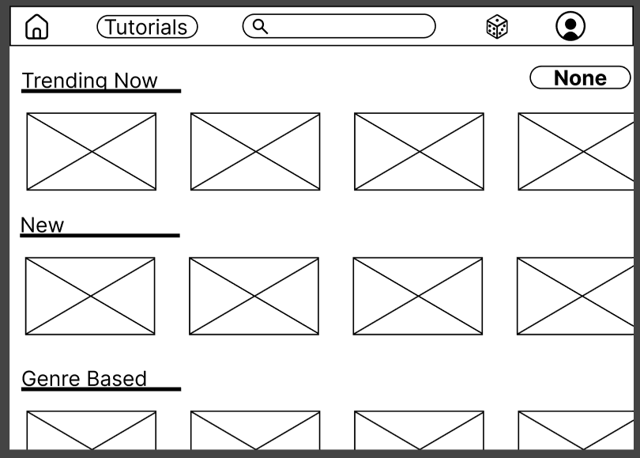
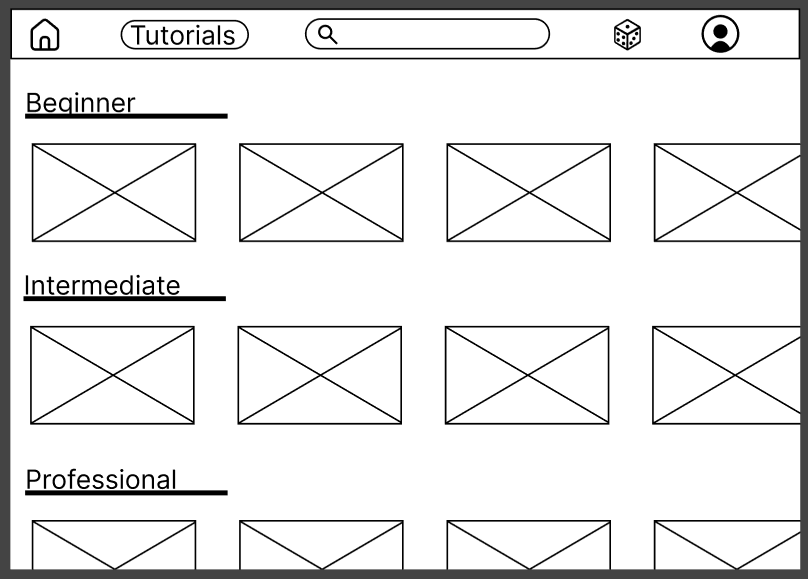
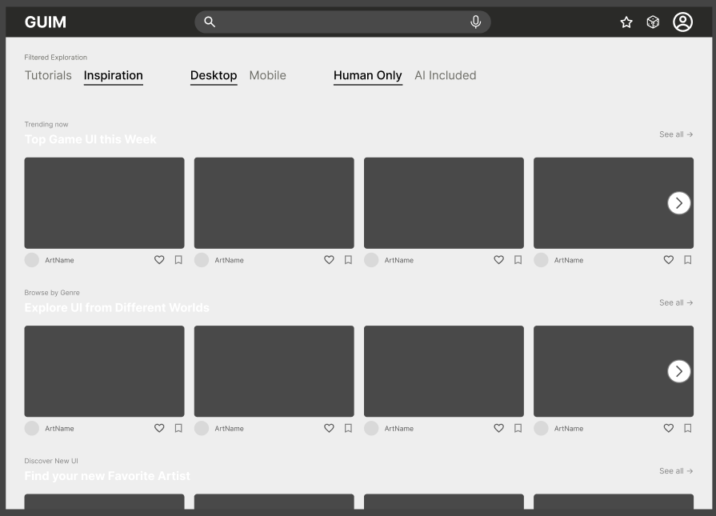
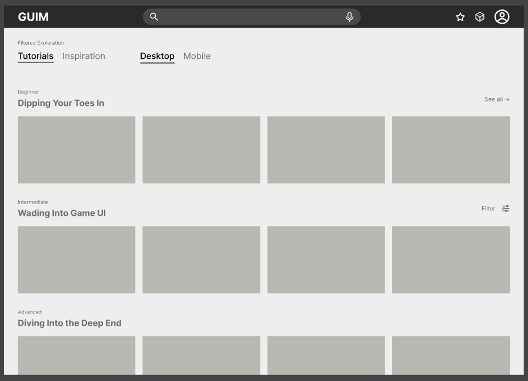
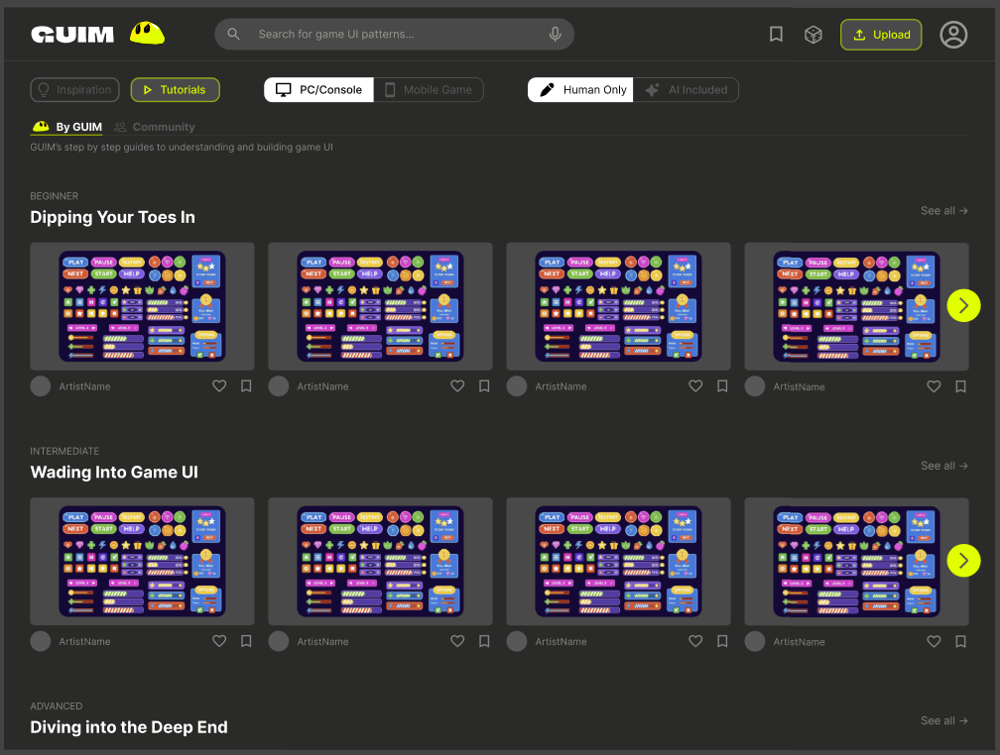
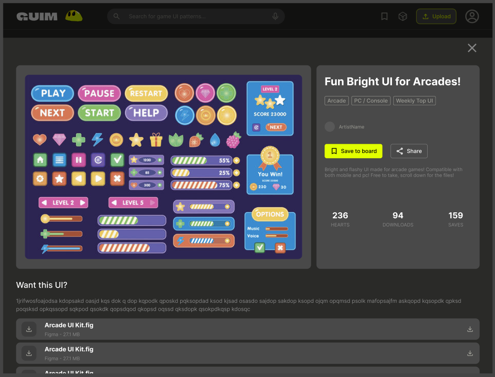
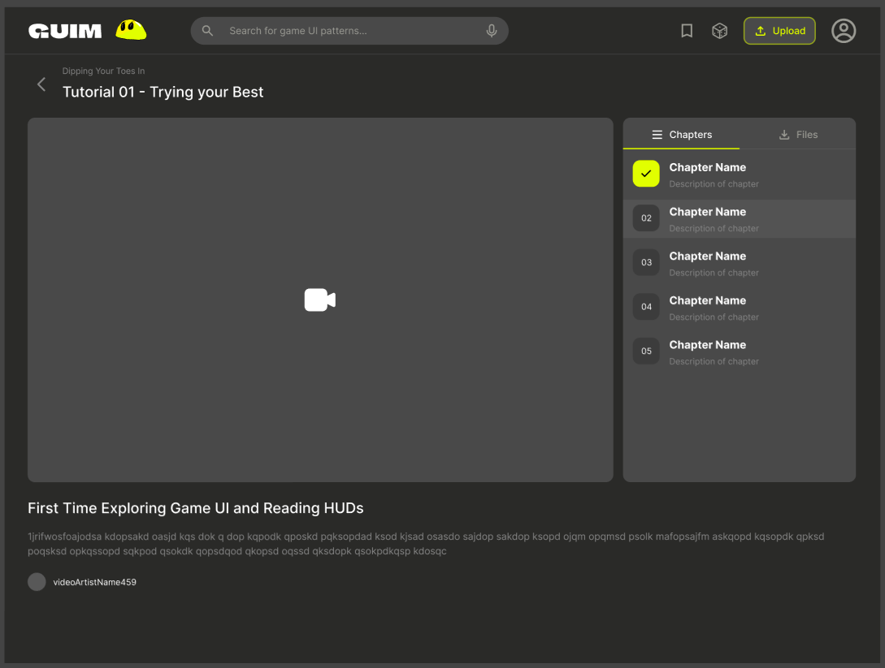
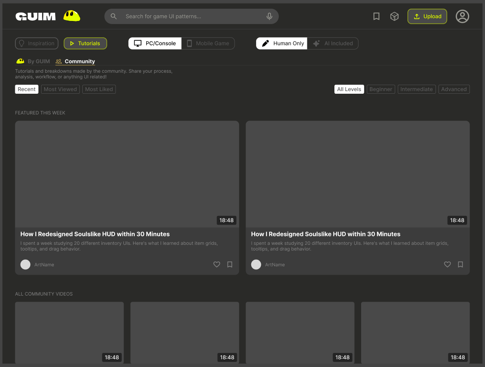
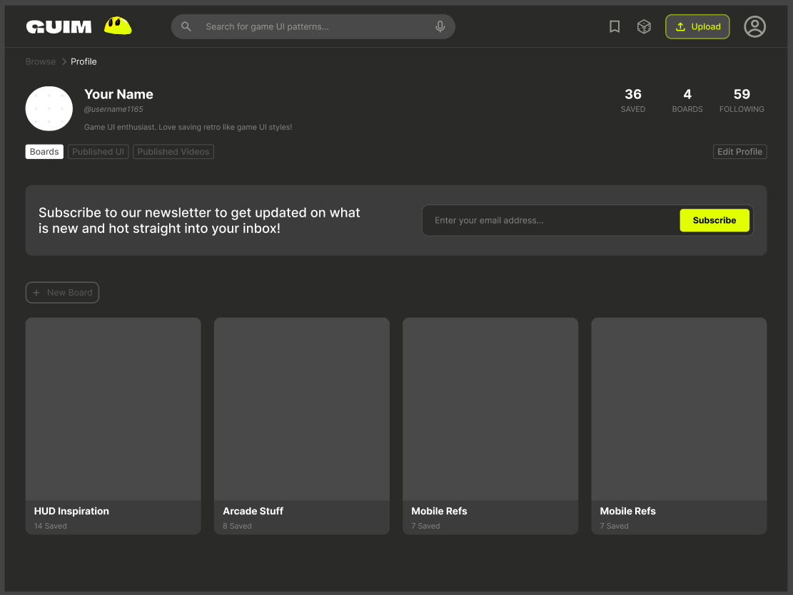

Background
GUIM is a platform designed for indie and solo game developers who are responsible for building both the functionality and visual experience of their games. Unlike larger studios, these developers often lack dedicated UI/UX designers and must rely on their own limited design knowledge or external resources. As a result, they frequently turn to scattered sources like forums, asset stores, or inspiration platforms to find UI elements. Through early research and user interviews, we found that developers often piece together assets from multiple places, leading to inconsistent design quality and inefficient workflows. Additionally, concerns around copyright, asset ownership, and sourcing reliable UI components were common themes that influenced how we approached the design.
Problem Statement
Indie and solo game developers struggle to efficiently create high-quality user interfaces due to limited time, resources, and design experience. Existing solutions either focus too heavily on inspiration (like Pinterest) or on asset distribution (like Itch.io), but rarely combine both in a way that is intuitive and practical. Developers need a centralized platform that allows them to quickly discover, evaluate, and download UI assets while also gaining inspiration and learning from real examples. The challenge was to design a system that balances discoverability, usability, and practicality, while remaining simple enough for non-designers to navigate effectively.
How We Got There
We began with rapid ideation using Crazy 8's to explore a wide range of possible solutions in a short amount of time. This exercise helped us prioritize quantity over quality early on and encouraged strong discussion within the team as we evaluated different directions. From this, we were able to identify a few promising concepts that balanced both inspiration and functionality.
User Research
After narrowing down initial ideas, we conducted user interviews to better understand how developers currently approach game UI design. We focused on questions around where developers source UI assets, whether they build or outsource their designs, and how long the process typically takes. These interviews provided valuable insights into real pain points, including inefficiencies in asset discovery and concerns around copyright and ownership.
Synthesis & Feature Definition
We organized our research findings using affinity mapping, which allowed us to identify key themes and prioritize features. This step helped us clarify what the platform should include, such as strong filtering systems, visual browsing, and the ability to save or download assets. It also helped us decide what to exclude, ensuring the platform remained focused and easy to use.
Proposed Solution
To address these challenges, we designed GUIM as a unified platform that bridges the gap between UI inspiration and practical asset usage. The core idea was to move beyond fragmented tools and create a system where discovery and implementation are part of the same experience.
At a high level, GUIM is structured around three key pillars: visual discovery, structured organization, and direct usability. Users interact with a visually driven interface that prioritizes quick scanning and exploration, supported by clear categorization and filtering to reduce search friction. Instead of treating UI as static inspiration, the platform positions each asset as something actionable and ready to be integrated into real projects.
- We also introduced lightweight personalization through saved collections, allowing users to build their own libraries of UI references as they iterate on designs. This reinforces the platform’s role not just as a browsing tool, but as an ongoing workspace for developers throughout their design process.
- By focusing on how users move from idea → selection → implementation, GUIM creates a more cohesive and efficient workflow than existing solutions.
Low-Fidelity Prototype
We then created low-fidelity wireframes to establish the basic layout and structure of the platform. These wireframes focused on core functionality, such as a homepage displaying trending UI assets and genre-based browsing. At this stage, we prioritized clarity and navigation over visual design, ensuring that users could quickly understand how to move through the platform.


Mid-Fidelity Prototype


We translated our improvements into mid-fidelity designs, adding more structure and visual hierarchy while continuing to refine usability. At this stage, we focused on improving discoverability, making filtering more intuitive, and ensuring that users could quickly browse and evaluate UI assets. These iterations brought the design closer to a functional product while still allowing room for changes.
Final High-Fidelity Prototype


The final product is a high-fidelity prototype that enables users to browse trending UI assets, explore designs by genre, preview individual components, and download assets for use in their own projects. Users can also create accounts to save and organize their favorite designs, allowing for a more personalized experience. The platform emphasizes both inspiration and functionality, making it easy for developers to not only find UI elements but also understand how they can be applied in real-world scenarios. By prioritizing discoverability, usability, and practicality, GUIM addresses the core challenges identified during user research and provides a streamlined solution for game UI development.


From learning to implementation, GUIM provides a seamless experience where users can explore game UI concepts through structured tutorials and then directly apply that knowledge by discovering, evaluating, and downloading UI assets. The interface prioritizes clarity, intuitive navigation, and quick action, enabling developers to efficiently move from inspiration to real-world use.


Community-driven features that support both content discovery and personalization—allowing users to explore tutorials, filter content by platform and skill level, and organize saved UI assets into custom boards. The design emphasizes intuitive navigation and user ownership, creating a space where developers can both learn from others and curate inspiration for their own projects.
Reflection
This project reinforced the importance of conducting user research early in the design process, as insights from interviews significantly shaped our direction and feature set. It also highlighted how iterative design can dramatically improve usability, with small changes in layout and navigation having a large impact on the overall experience. One of the biggest challenges was balancing the platform’s role as both an inspiration tool and a functional marketplace. If I were to continue developing this project, I would focus on expanding filtering capabilities, adding community-driven features such as ratings and creator profiles, and exploring advanced functionality like AI-assisted UI generation. Overall, GUIM demonstrates how thoughtful design and iteration can simplify complex workflows and better support the needs of indie developers.